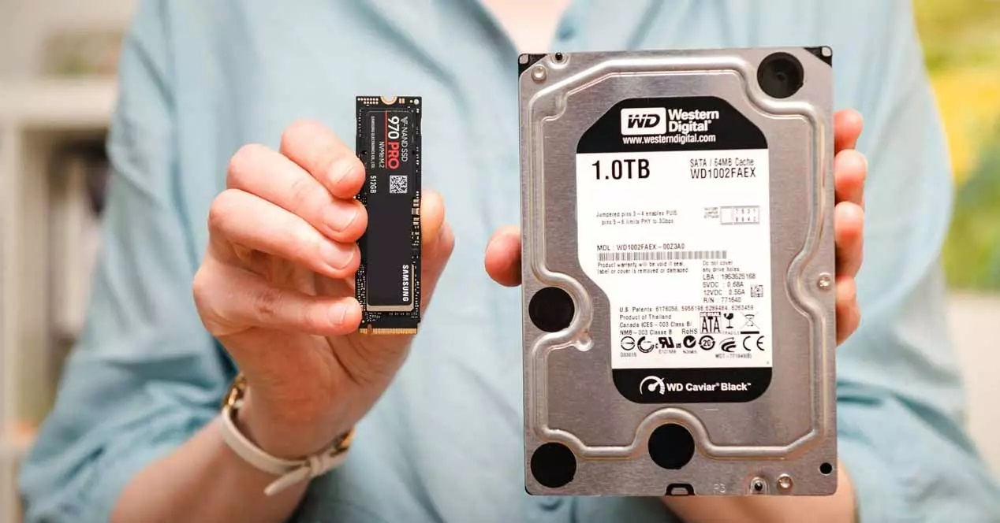

Disco Duro
►Concepto
Es un dispositivo para el almacenamiento de datos de forma no volátil, es decir, para almacenar los datos digitales utiliza un sistema de grabación magnética. De esta forma es posible mantener la información grabada en un soporte de forma permanente
